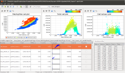
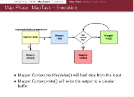
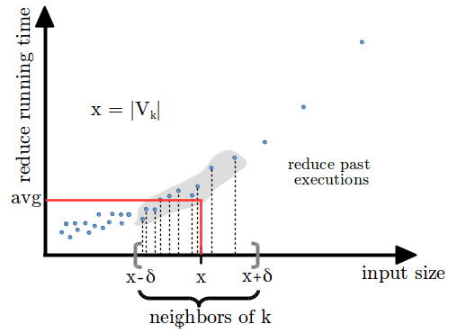

Info
Research interests:
Related papers: [CDF-PLDI12] [CDFM-CGO14] [CDF-TSE14] [C-VAL14]
Related papers: [CF-SOCC15]
My main research interests are in programming languages, software systems and program analysis. During my PhD, I focused my work on the study of performance scalability of software systems. In the last two years, I have investigated how program analysis techniques, such as symbolic execution, can be exploited in the context of cybersecurity.
Position:
Email:
coppa [at] dis.uniroma1.it
Office:
DIAG, Via Ariosto 25, Rome - 1st floor, room B118
Full CV:
Education
Jan 2016 - Present
PostDoc at Sapienza University of Rome
with Prof. Camil Demetrescu (demetres [at] dis.uniroma1.it).
with Prof. Camil Demetrescu (demetres [at] dis.uniroma1.it).
Oct 2012 - Dic 2015
Ph.D. in Computer Science at Sapienza University of Rome.
Advisor: Prof. Irene Finocchi (finocchi [at] di.uniroma1.it).
Advisor: Prof. Irene Finocchi (finocchi [at] di.uniroma1.it).
Apr 2015 - Jul 2015
Visitor at TU Darmstadt.
Prof. Patrick Eugster (peugster [at] cs.purdue.edu).
Prof. Patrick Eugster (peugster [at] cs.purdue.edu).
Oct 2010 - Oct 2012
Master of Science in Engineering in Computer Science (taught in English) at Sapienza University of Rome. GPA 29.57/30. Final grade: 110/110 summa cum laude.
Thesis Advisor: Prof. Camil Demetrescu (demetres [at] dis.uniroma1.it).
Thesis Advisor: Prof. Camil Demetrescu (demetres [at] dis.uniroma1.it).
Sept 2007 - Oct 2010
Bachelor of Science in Engineering in Computer Science at Sapienza University of Rome. GPA: 26.7/30. Final grade: 110/110.
Thesis advisor: Prof. Camil Demetrescu (demetres [at] dis.uniroma1.it).
Thesis advisor: Prof. Camil Demetrescu (demetres [at] dis.uniroma1.it).
Projects

aprof - input-sensitive profiling
aprof is a Valgrind tool for performance profiling designed to help developers discover hidden asymptotic inefficiencies in the code. From one or more runs of a program, aprof measures how the performance of individual routines scales as a function of the input size, yielding clues to its growth rate.Related papers: [CDF-PLDI12] [CDFM-CGO14] [CDF-TSE14] [C-VAL14]

Hadoop Internals - Diagrams
This project contains several diagrams describing Apache Hadoop internals (2.3.0 or later).

NearestFit - predicting MapReduce performance
The NearestFit progress indicator targets accuracy of progress predictions for MapReduce jobs in the presence of data skewness and super-linear computations. This is achieved combining performance profiling, machine learning techniques, and data streaming algorithms.Related papers: [CF-SOCC15]
Publications
- [BCDDF-TR16] Roberto Baldoni, Emilio Coppa, Daniele Cono D'Elia, Camil Demetrescu, Irene Finocchi. A Survey of Symbolic Execution Techniques. Technical report, 2016. [ArXiv]
- [CF-SOCC15] Emilio Coppa and Irene Finocchi. On data skewness, stragglers, and MapReduce progress indicators. Sixth ACM Symposium on Cloud Computing (SoCC'15), pp 139-152, 2015. [DOI] [PDF] [SLIDES]
- [C-VAL14] Emilio Coppa. An interactive visualization framework for performance analysis. 8th International Conference on Performance Evaluation Methodologies and Tools (VALUETOOLS 2014), pp 159-164, 2014. [DOI] [PDF] [SLIDES] [PROJECT SITE]
- [CDF-TSE14] Emilio Coppa, Camil Demetrescu, and Irene Finocchi. Input-Sensitive Profiling. IEEE Transactions on Software Engineering (IEEE TSE'14), 40(12), pp 1185-1205, 2014.[DOI] [PDF] [PROJECT SITE]
- [CDFM-CGO14] Emilio Coppa, Camil Demetrescu, Irene Finocchi, and Romolo Marotta. Estimating the Empirical Cost Function of Routines with Dynamic Workloads. 12th IEEE/ACM International Symposium on Code Generation and Optimization (CGO 2014), pp 230-239, 2014. [DOI] [PDF] [SLIDES] [PROJECT SITE]
- [CDF-PLDI12] Emilio Coppa, Camil Demetrescu, and Irene Finocchi. Input-Sensitive Profiling. 33rd ACM SIGPLAN conference on Programming Language Design and Implementation (PLDI 2012), pp 89-98, 2012. [DOI] [PDF] [SLIDES] [PROJECT SITE]
Teaching
- [2016-2017] Sistemi di calcolo I: tutor delle esercitazioni. Materiale delle esercitazioni.
- [2015-2016] Fondamenti di Informatica II: tutor delle esercitazioni
- Progettazione del Software: Prof. De Giacomo
- Algoritmi e Strutture Dati: Prof. D'Amore